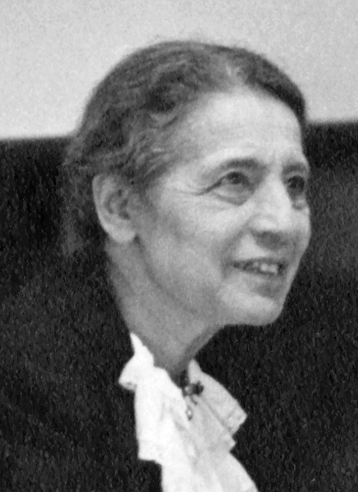
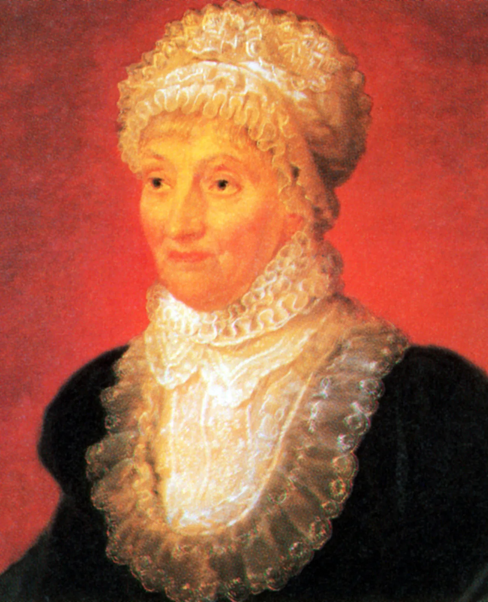

Lise Meitner
Meitner cunhou o termo fissão nuclear ao calcular a energia liberada no fenômeno,
usado na produção de energia nas usinas termonucleares.

Caroline Herschel
Herschel foi a primeira mulher a descobrir um cometa,
a primeira mulher cujo trabalho foi publicado pela Royal Society
e a primeira britânica a ganhar um salário por trabalho científico.